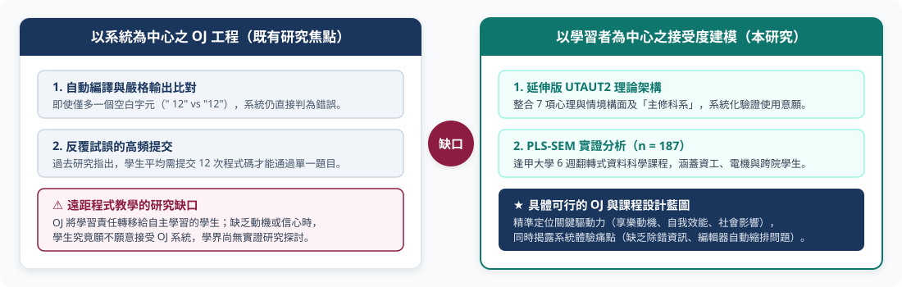
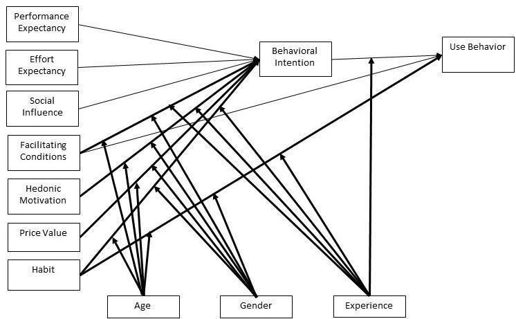
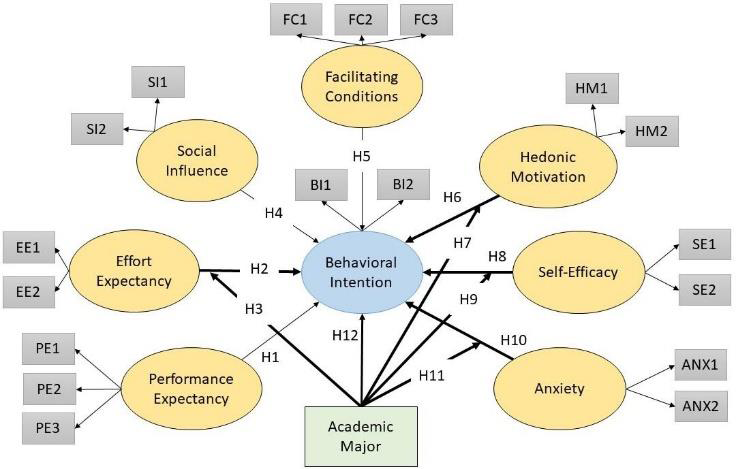
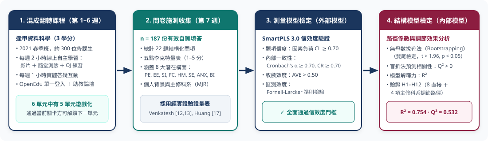
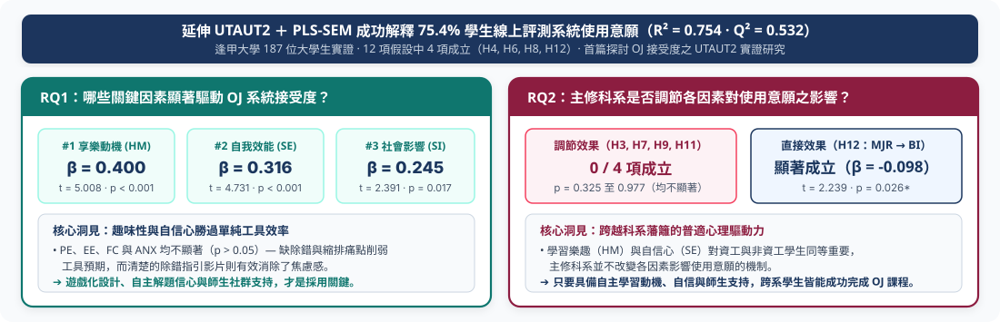

p0731809@o365.fcu.edu.tw
nlhsueh@fcu.edu.tw
10.1109/ACCESS.2021.3126896
" 12"
"12"
研究動機與核心問題 為何遠距程式課程中的 Online Judge 接受度亟待研究，以及兩大研究問題（RQ1–RQ2）。
文獻回顧與研究缺口 線上評測系統（OJ）、UTAUT2 科技接受度模型與 PLS-SEM 小樣本因果建模。
研究模型與 12 項假設 延伸 UTAUT2（納入自我效能、焦慮感與主修科系）及 H1–H12 假設推演。
課程情境、問卷與樣本 逢甲大學 6 週翻轉式資料科學課程、22 題問卷（n = 187）與兩階段 PLS-SEM 流程。
PLS-SEM 測量與結構模型結果 信效度驗證、R2 = 0.754、直接驅動因素（RQ1）與主修科系調節檢定（RQ2）。
深度討論、實務建議與結論 為何 8 項假設未成立、系統與教學設計指南、研究限制與未來方向。

本研究以 UTAUT2 ＋ PLS-SEM 針對混成式程式設計課程中的 OJ 接受度提出兩大研究問題 (逐步揭曉)：
既有 OJ 文獻偏重系統工程與學習成效，而 UTAUT2 教育應用多聚焦於一般數位學習平台，尚未切入自動化程式評測情境。
n = 187

PE
EE
SI
FC
HM
BI
SE
ANX
MJR

PE ➔ BI
EE ➔ BI
SI ➔ BI
FC ➔ BI
HM ➔ BI
SE ➔ BI
ANX ➔ BI
MJR ➔ BI
MJR × EE ➔ BI
MJR × HM ➔ BI
MJR × SE ➔ BI
MJR × ANX ➔ BI

0.842–0.964
四項關於主修科系（MJR）之調節假設全數未達顯著水準（t < 1.96, p > 0.05）：
t < 1.96
p > 0.05
H3, H7, H9, H11
H3
H11
H12
t = 2.239
將「不顯著」的統計結果，轉化為具體的 OJ 系統體驗與課程設計診斷：
p = 0.373
p = 0.648
p = 0.922
p = 0.778
p = 0.325–0.977
Wrong Answer

探討學生於程式設計課程中對線上評測系統（Online Judge）之接受度：結構方程模型分析法
 顯著驅動因素影響力排序（RQ1）
顯著驅動因素影響力排序（RQ1）